स्कन्ध 2 · अध्याय 1
श्लोक १
शुक उवाच–
वरीयानेष ते प््राश्नः कृतो लोकहितं नृप ।
आत्मवित्सम्मतः पुंसां श्रोतव्यादिषु यः परः।। १ ।।
वरीयानेष ते प््राश्नः कृतो लोकहितं नृप ।
आत्मवित्सम्मतः पुंसां श्रोतव्यादिषु यः परः।। १ ।।
भागवततात्पर्यनिर्णय
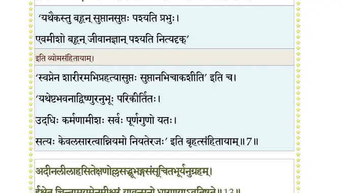
श्लोक २
श्रोतव्यानीह राजेन्द्र नृणां सन्ति सहस्रशः ।
अपश्यतामात्मतत्वं गृहेषु गृहमेधिनाम्।। २ ।।
अपश्यतामात्मतत्वं गृहेषु गृहमेधिनाम्।। २ ।।
भागवततात्पर्यनिर्णय
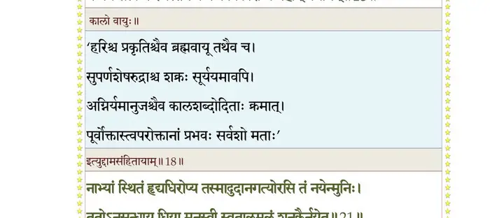
श्लोक ३
निद्रया ह्रियते नक्तं व्यवायेन नवं वयः ।
दिवा चार्थेहया राजन् कुटुम्बभरणेन वा।। ३ ।।
दिवा चार्थेहया राजन् कुटुम्बभरणेन वा।। ३ ।।
भागवततात्पर्यनिर्णय
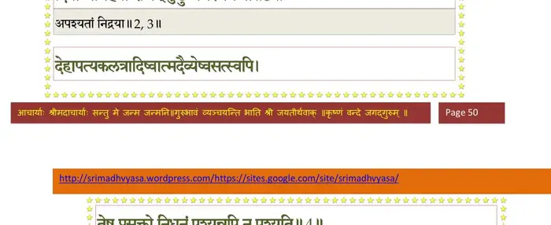
श्लोक ४
देहापत्यकलत्रादिष्वात्मदैन्येष्वसत्स्वपि ।
तेषु प््रासक्तो निधनं पश्यन्नपि न पश्यति।। ४ ।।
तेषु प््रासक्तो निधनं पश्यन्नपि न पश्यति।। ४ ।।
भागवततात्पर्यनिर्णय
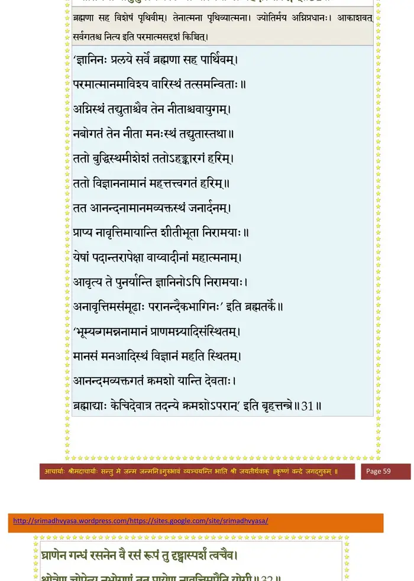
श्लोक ५
तस्माद्भारत सर्वात्मा भगवान् हरिरीश्वरः ।
श्रोतव्यः कीर्तितव्यश्च स्मर्तव्यश्चेच्छताऽभयम्।। ५ ।।
श्रोतव्यः कीर्तितव्यश्च स्मर्तव्यश्चेच्छताऽभयम्।। ५ ।।
भागवततात्पर्यनिर्णय
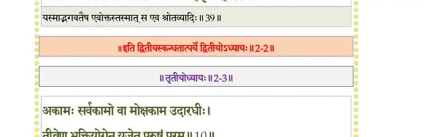
श्लोक ६
एतावान् साङ्ख्ययोगाभ्यां स्वधर्मपरिनिष्ठया ।
जन्मलाभः परः पुंसामन्ते नारायणस्मृतिः।। ६ ।।
जन्मलाभः परः पुंसामन्ते नारायणस्मृतिः।। ६ ।।
श्लोक ७
प््र•येण मुनयो राजन्निवृत्ता विधिनिषेधतः ।
नैर्गुण्यस्था रमन्ते स्म गुणानुकथने हरेः।। ७ ।।
नैर्गुण्यस्था रमन्ते स्म गुणानुकथने हरेः।। ७ ।।
भागवततात्पर्यनिर्णय
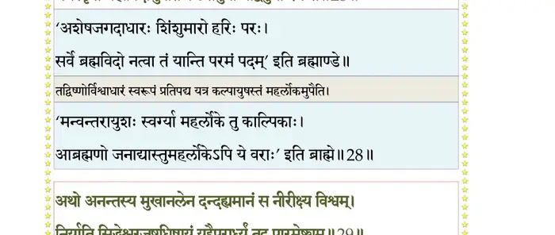
श्लोक ८
इदं भागवतं नाम पुराणं ब्रह्मसम्मितम् ।
अधीतवान् द्वापरादौ पितुर्द्वैपायनादहम्।। ८ ।।
अधीतवान् द्वापरादौ पितुर्द्वैपायनादहम्।। ८ ।।
भागवततात्पर्यनिर्णय
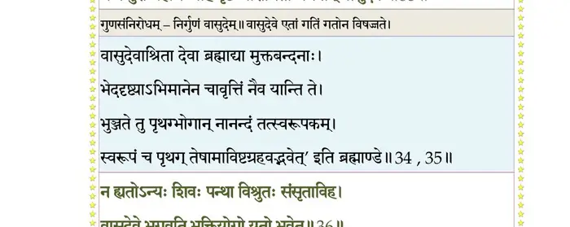
श्लोक ९
परिनिष्ठितोऽपि नैर्गुण्य उत्तमश्लोकलीलया ।
गृहीतचेता राजर्ष आख्यानं यदधीतवान्।। ९ ।।
गृहीतचेता राजर्ष आख्यानं यदधीतवान्।। ९ ।।
भागवततात्पर्यनिर्णय
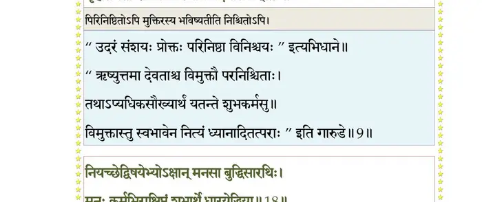
श्लोक १०
तदहं तेऽभिधास्यामि महापूरुषिको भवान् ।
यत्र श्रद्दधतामाशु स्यान्मुकुन्दे मतिः सती।। १० ।।
यत्र श्रद्दधतामाशु स्यान्मुकुन्दे मतिः सती।। १० ।।
श्लोक ११
एतन्निर्विद्यमानानामिच्छतामकुतोभयम् ।
योगिनां नृप निर्णीतं हरेर्नामानुकीर्तनम्।। ११ ।।
योगिनां नृप निर्णीतं हरेर्नामानुकीर्तनम्।। ११ ।।
भागवततात्पर्यनिर्णय
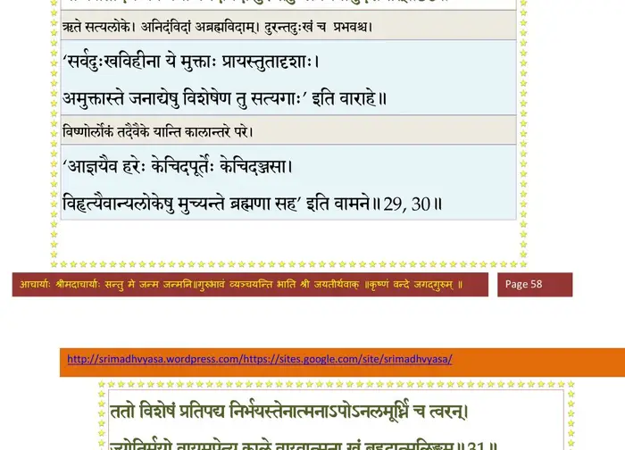
श्लोक १२
किं प््रामत्तस्य बहुभिः परोक्षैर्हायनैरिह ।
परं मुहूर्तं विदितं घटते श्रेयसे यतः।। १२ ।।
परं मुहूर्तं विदितं घटते श्रेयसे यतः।। १२ ।।
भागवततात्पर्यनिर्णय
श्लोक १३
खट्वाङ्गो नाम राजर्षिः ज्ञात्वेयत्तामिहायुषः ।
मुहूर्तात्सङ्गमुत्सृज्य गतवानभयं हरिम्।। १३ ।।
मुहूर्तात्सङ्गमुत्सृज्य गतवानभयं हरिम्।। १३ ।।
श्लोक १४
तवाप्येतर्हि कौरव्य सप्ताहं जीवितावधिः ।
उपकल्पय तत्सर्वं यत्तावत्साम्परायिकम्।। १४ ।।
उपकल्पय तत्सर्वं यत्तावत्साम्परायिकम्।। १४ ।।
श्लोक १५
अन्तकाले तु पुरुष आगते गतसाध्वसः ।
छिन्द्यादसङ्गशस्त्रेण स्पृहां देहेऽनु ये च तम्।। १५ ।।
छिन्द्यादसङ्गशस्त्रेण स्पृहां देहेऽनु ये च तम्।। १५ ।।
भागवततात्पर्यनिर्णय
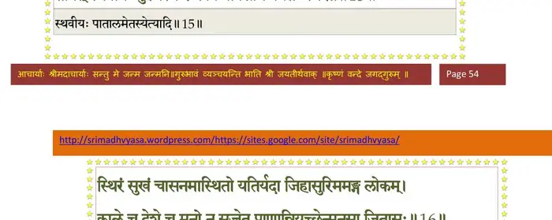
श्लोक १६
गृहात्प््राव्रजितो धीरः पुण्यतीर्थजलाप्लुतः ।
शुचौ विविक्त आसीनो विधिवत्कल्पितासने।। १६ ।।
शुचौ विविक्त आसीनो विधिवत्कल्पितासने।। १६ ।।
श्लोक १७
अभ्यसेन्मनसा शुद्धं त्रिवृद्ब्रह्माक्षरं परम् ।
मनो यच्छेज्जितश्वासो ब्रह्मबीजमनुस्मरन्।। १७ ।।
मनो यच्छेज्जितश्वासो ब्रह्मबीजमनुस्मरन्।। १७ ।।
श्लोक १८
नियच्छेद्विषयेभ्योऽक्षान्मनसा बुद्धिसारथिः ।
मनः कर्मभिराक्षिप्तं शुभार्थे धारयेद्धिया।। १८ ।।
मनः कर्मभिराक्षिप्तं शुभार्थे धारयेद्धिया।। १८ ।।
भागवततात्पर्यनिर्णय
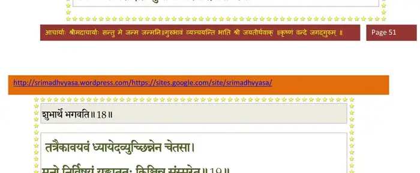
श्लोक १९
तत्रैकावयवं ध्यायेदव्युच्छिन्नेन चेतसा ।
मनो निर्विषयं युंक्त्वा ततः किञ्चिन्न संस्मरेत् ।
पदं तत्परमं विष्णोः मनो यत्र प््रासीदति।। १९ ।।
मनो निर्विषयं युंक्त्वा ततः किञ्चिन्न संस्मरेत् ।
पदं तत्परमं विष्णोः मनो यत्र प््रासीदति।। १९ ।।
भागवततात्पर्यनिर्णय
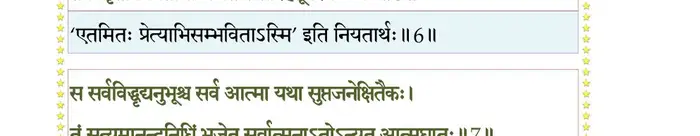
श्लोक २०
रजस्तमोभ्यामाक्षिप्तं विमूढं मन आत्मनः ।
यच्छेद्धारणया धीरो हन्ति या तत्कृतं मलम्।। २० ।।
यच्छेद्धारणया धीरो हन्ति या तत्कृतं मलम्।। २० ।।
श्लोक २१
यस्यां सन्धार्यमाणायां योगिनो भक्तिलक्षणः ।
आशु सम्पद्यते योग आश्रयं भद्रमीक्षतः।। २१ ।।
आशु सम्पद्यते योग आश्रयं भद्रमीक्षतः।। २१ ।।
भागवततात्पर्यनिर्णय
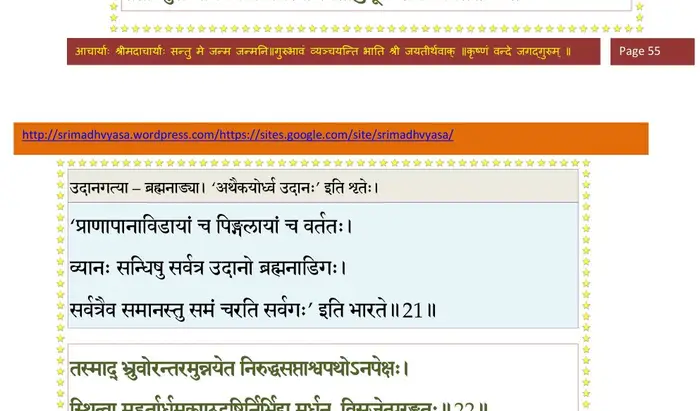
श्लोक २२
राजोवाच–
यथा सन्धार्यते ब्रह्मन् धारणा यत्र संमता ।
यादृशी वा हरेदाशु पुरुषस्य मनो मलम्।। २२ ।।
यथा सन्धार्यते ब्रह्मन् धारणा यत्र संमता ।
यादृशी वा हरेदाशु पुरुषस्य मनो मलम्।। २२ ।।
भागवततात्पर्यनिर्णय
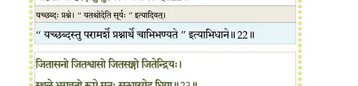
श्लोक २३
श्रीशुक उवाच–
जितासनो जितश्वासो जितसङ्गो जितेन्द्रियः ।
स्थूले भगवतो रूपे मनः सन्धारयेद्धिया।। २३ ।।
जितासनो जितश्वासो जितसङ्गो जितेन्द्रियः ।
स्थूले भगवतो रूपे मनः सन्धारयेद्धिया।। २३ ।।
भागवततात्पर्यनिर्णय
श्लोक २४
विशेषस्तस्य देहोऽयं स्थविष्ठश्च स्थवीयसाम् ।
यत्रेदं दृश्यते विश्वं भूतं भव्यं भवच्च यत्।। २४ ।।
यत्रेदं दृश्यते विश्वं भूतं भव्यं भवच्च यत्।। २४ ।।
भागवततात्पर्यनिर्णय
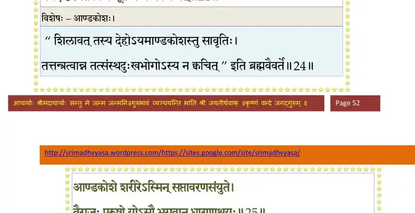
श्लोक २५
आण्डकोशे शरीरेऽस्मिन् सप्तावरणसंयुते ।
वैराजः पुरुषो योऽसौ भगवान् धारणाश्रयः।। २५ ।।
वैराजः पुरुषो योऽसौ भगवान् धारणाश्रयः।। २५ ।।
भागवततात्पर्यनिर्णय
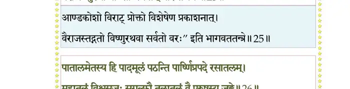
श्लोक २६
पातालमेतस्य हि पादमूलं पठन्ति पार्ष्णिप््रापदे रसातलम् ।
महातलं विश्वसृजस्सुगुल्फौ तलातलं वै पुरुषस्य जङ्घे।। २६ ।।
महातलं विश्वसृजस्सुगुल्फौ तलातलं वै पुरुषस्य जङ्घे।। २६ ।।
भागवततात्पर्यनिर्णय
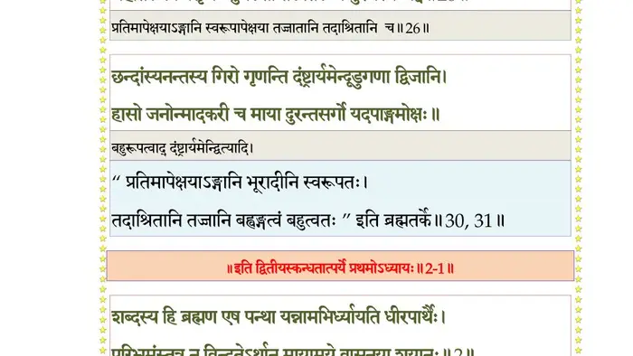
श्लोक २७
द्वे जानुनी सुतलं विश्वमूर्तेरूरुद्वयं वितलञ्चातलञ्च ।
महीतलं तज्जघनं महीपते नभस्तलं नाभिसरो गृणन्ति।। २७ ।।
महीतलं तज्जघनं महीपते नभस्तलं नाभिसरो गृणन्ति।। २७ ।।
श्लोक २८
ऊरुस्थलं ज्योतिरनीकमस्य ग्रीवा महर्वदनं वै जनोऽस्य ।
तपो रराटिं विदुरादिपुंसः सत्यं तु शीर्षाणि सहस्रशीर्ष्णः।। २८ ।।
तपो रराटिं विदुरादिपुंसः सत्यं तु शीर्षाणि सहस्रशीर्ष्णः।। २८ ।।
श्लोक २९
इन्द्रादयो बाहव आहुरस्य कर्णौ दिशः श्रोत्रममुष्य शब्दः ।
नासत्यदस्रौ परमस्य नासे घ्राणञ्च गन्धो मुखमग्निरिद्धः।। २९ ।।
नासत्यदस्रौ परमस्य नासे घ्राणञ्च गन्धो मुखमग्निरिद्धः।। २९ ।।
भागवततात्पर्यनिर्णय
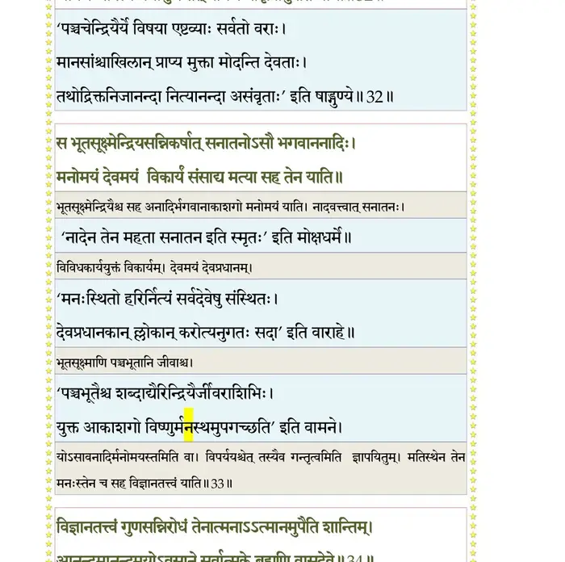
श्लोक ३०
द्यौरक्षिणी चक्षुरभूत्पतङ्गः पक्ष्माणि विष्णोरहनी उभे च ।
तद्भ्रूविजृम्भः परमेष्ठिधिष्ण्यमापोऽस्य तालू रस एव जिह्वा।। ३० ।।
तद्भ्रूविजृम्भः परमेष्ठिधिष्ण्यमापोऽस्य तालू रस एव जिह्वा।। ३० ।।
भागवततात्पर्यनिर्णय
श्लोक ३१
छन्दांस्यनन्तस्य गिरो गृणन्ति दंष्ट्रार्यमेन्दूडुगणा द्विजानि ।
हासो जनोन्मादकरी च माया दुरन्तसर्गो यदपाङ्गमोक्षः।। ३१ ।।
हासो जनोन्मादकरी च माया दुरन्तसर्गो यदपाङ्गमोक्षः।। ३१ ।।
भागवततात्पर्यनिर्णय
श्लोक ३३
व्रीडोत्तरोष्ठोऽधर एव लोभो धर्मः स्तनोऽधर्मपथश्च पृष्ठः ।
कस्तस्य मेढ्रं वृषणौ च मित्रः कुक्षिः समुद्रा गिरयोऽस्थिसङ्घाः।।३२
नद्योऽस्य नाड्योऽथ तनूरुहाणि महीरुहा विश्वतनोर्नृपेन्द्र ।
अन्नञ्च वीर्यं श्वसितं मातरिश्वा गतिर्वयः कर्म गुणप््रावाहः।। ३३ ।।
कस्तस्य मेढ्रं वृषणौ च मित्रः कुक्षिः समुद्रा गिरयोऽस्थिसङ्घाः।।३२
नद्योऽस्य नाड्योऽथ तनूरुहाणि महीरुहा विश्वतनोर्नृपेन्द्र ।
अन्नञ्च वीर्यं श्वसितं मातरिश्वा गतिर्वयः कर्म गुणप््रावाहः।। ३३ ।।
श्लोक ३४
ईशस्य केशान्विदुरम्बुवाहान् वासस्तु सन्ध्ये कुरुवर्य भूम्नः ।
अव्यक्तमाहुर्हृदयं मनस्तु सचन्द्रमाः सर्वविकारकोशः।। ३४ ।।
अव्यक्तमाहुर्हृदयं मनस्तु सचन्द्रमाः सर्वविकारकोशः।। ३४ ।।
भागवततात्पर्यनिर्णय
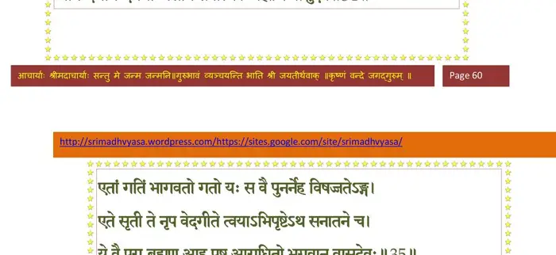
श्लोक ३५
विज्ञानशक्तिं मतिमामनन्ति सर्वात्मनोऽन्तःकरणं गिरित्रः ।
अश्वाश्वतर्युष्ट्रगजा नखानि सर्वे मृगाः पशवः श्रोणिदेशे।। ३५ ।।
अश्वाश्वतर्युष्ट्रगजा नखानि सर्वे मृगाः पशवः श्रोणिदेशे।। ३५ ।।
भागवततात्पर्यनिर्णय
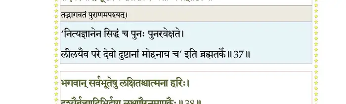
श्लोक ३६
वचांसि तद्व्याहरणं विचित्रं मनुर्मनीषा मनुजो निवासः ।
गन्धर्वविद्याधरचारणाप्सरः स्वरस्मृतिर्ह्यसुरानीकवीर्यः।। ३६ ।।
गन्धर्वविद्याधरचारणाप्सरः स्वरस्मृतिर्ह्यसुरानीकवीर्यः।। ३६ ।।
श्लोक ३७
ब्रह्माननः क्षत्रभुजो महात्मा विडूरुरङ्घ्रिश्रितकृष्णवर्णः ।
स्वाहास्वधावीर्यगुणोपपन्नो हव्यात्मकः कर्मवितानयोगः।। ३७ ।।
स्वाहास्वधावीर्यगुणोपपन्नो हव्यात्मकः कर्मवितानयोगः।। ३७ ।।
।। इति श्रीमद्भागवते द्वितीयस्कन्धे प््राथमोऽध्यायः ।।